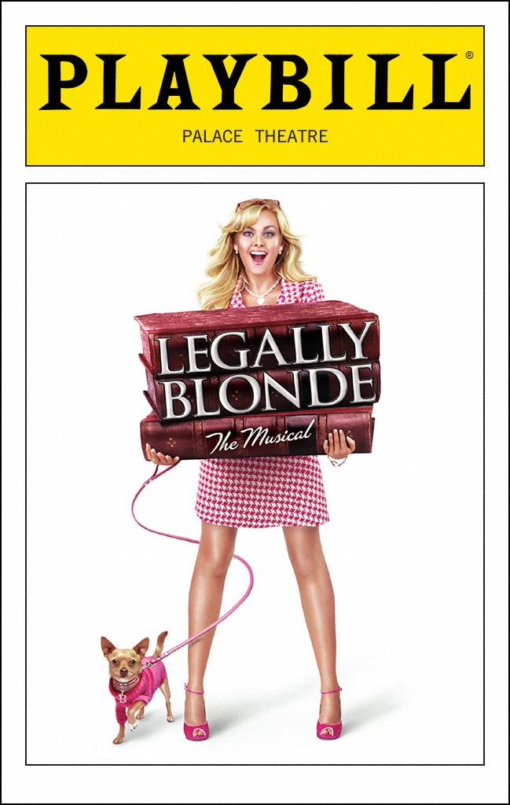

Legally Blonde The Musical (Better Than The Movie)

Ireland.
Because of the song
Subtext by Calvin Klein.
It is a perfume mentioned in the song "Take it Like a Man"
Road trip road trip
A line from Brooke's trial in which the Delta Nus are being iconic
Home